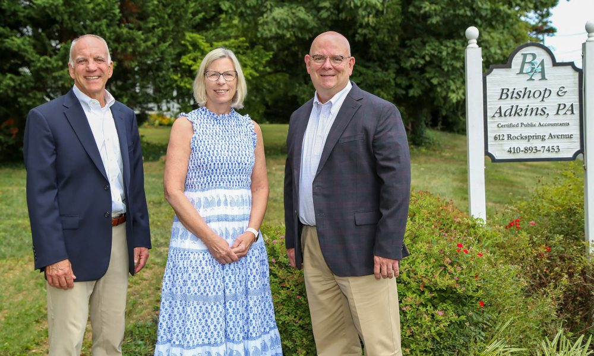

Certified Public Accountants · Since 1991
Thoughtful tax and accounting for Harford County
A full-service firm in the heart of Bel Air, working with individuals, businesses, estates and nonprofits — the same people, year after year.
Who we are
A firm small enough to know you, large enough to handle it
Bishop & Adkins, P.A. is a quality full-service tax and accounting firm registered with the Maryland State Board of Public Accountants. For more than three decades we have helped clients across Bel Air and Harford County meet their obligations and plan for what comes next.
Our team’s experience runs from straightforward individual returns to complex multi-state filings, rental and vacation property, stock options and grants, and complicated investment accounts. Whatever arrives in your mailbox from the IRS, we have almost certainly seen it before.

What we do
Services
Tax compliance and planning, accounting support and the advice that surrounds both.
Tax Preparation
Tax compliance for individuals, businesses, trusts, estates and nonprofits.
Read more →Tax Planning, Research & Strategy
Forward-looking strategy to reduce current and future tax liability.
Read more →QuickBooks Support & Bookkeeping
Set up, clean up and day-to-day support from advisors with 25+ years on the platform.
Read more →
The Rebecca House, built 1886 — our offices in Bel Air’s historic district.
Since 1991
An 1886 Victorian in Bel Air’s historic district
Our office sits in the Town of Bel Air’s historic district at 612 Rock Spring Road. Built in 1886 and known as the Rebecca House, the Victorian now serves as the home of Bishop & Adkins, P.A.
It is a fitting building for a practice built on continuity — Rick Bishop founded the firm in 1991, Rob Adkins joined in 1995, and Donna Singer came aboard in 2008. Many of our clients have worked with the same accountant here for twenty years or more.
- Founded1991 by Rick Bishop, CPA
- RegisteredMaryland State Board of Public Accountants
- ServingBel Air & Harford County, Maryland
Our people
The partners

Rick Bishop, CPA
Founding Partner

Rob Adkins, CPA/PFS, CFP®
Partner

Donna Singer, CPA/PFS
Partner
In their words
What clients tell us
“They have handled our family’s returns and my business books for years. Questions get answered the same day, and nothing falls through the cracks.”
— Business owner, Bel Air“When my father passed, I had no idea what was involved in settling the estate. They walked me through every filing and deadline.”
— Estate client, Harford County“Straightforward advice, no jargon, and they actually tell you when something isn’t worth doing.”
— Individual tax clientLet’s talk about your situation
Whether it’s a return, a business decision or an estate you didn’t expect to be managing, a short conversation is usually the fastest way forward.
(410) 893-7453